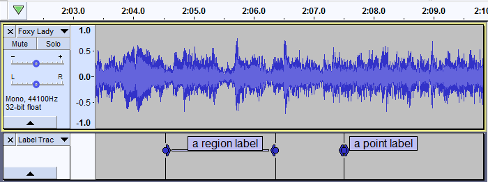

Label Tracks
Features of a Label Track
- Labels can be used to mark then restore chosen points or regions of audio for playback or editing.
- Labels can contain text for purposes of annotation or transcription.
- Labels and their text provide a convenient way to name different songs in a recorded track then export all songs at once to separate audio files using .
- Many of the tools in the Analyze Menu use labels to mark detected regions (such as regions of silence, sound or clipping). Point labels can mark detected beats.
- The label text can be edited and you can resize region labels or move region or point labels.
- The Label Track's Dropdown Menu can be used to name the track, move it up or down or set the font of all label text.
- Label tracks are included when saving an Audacity Project.
- Label tracks can be used to define sets of Sync-Locked Track Groups.
- 
- Example of a mono audio track with a label track containing a region label and a point label.
Right-clicking a label will cause its context menu to appear:
From this menu you can:
- Cut or Copy any text selected in the label to the system clipboard
- Paste any text that is currently on the system clipboard
- Delete the label
- Open Labels Editor to edit only that label's Start Time and End Time (and also its Low Frequency and High Frequency for use in Spectral Selection).
Creating and selecting Labels
Labels can be created by selecting a region or clicking at a point of interest then choosing (or use its keyboard shortcut Ctrl + B). An empty label appears then you can type to add text to the label. Press Enter on the keyboard to confirm the text and close the label.
When the label track has the yellow focus border as in the image above you can, if preferred, just type to create a label containing that text rather than first using the menu or shortcut to create the label. This default behaviour can be turned off, if required, in Tracks Preferences by unchecking the "Type to create label".
You can also create labels while playing or recording.
- To create a point label at the current position of the green playback cursor or red recording cursor, choose or its keyboard shortcut Ctrl + M (⌘ + . on Mac).
- To create a region label while playing or recording, click and drag the region then use the same Add Label at Selection command (or its shortcut Ctrl + B ) as when adding a region label when the track is stopped. Similarly you can click anywhere in a track while playing or recording and use Ctrl + B to label that point.
You can create extra label tracks using but when exporting multiple files based on labels, audio is only exported for the labels in the uppermost label track in the project.
Selecting a Label
When you click inside a label to select it, the label background color changes to white, indicating that the label text is open for editing, and the cursor point or region of audio the label corresponds to is restored. The region will be visible in all audio tracks that are selected and the cursor will be visible in all audio tracks that have the yellow focus border. This applies even if the label track is above the audio track.
See this page for more details on label creation and selection.
Open label for editing
When focus is on a label track as indicated by the yellow focus border:
- TAB opens the next label for editing and places the editing cursor or selection to correspond with that label
- Shift + TAB opens the previous label for editing and places the editing cursor or selection to correspond with that label.
The label background becomes white, indicating you can type to edit the label's text. For a point label, the editing cursor is placed at the label moved to. For a region label, a selection is placed corresponding to the label moved to. The view position moves if necessary to show you the label moved to.
Audacity cycles through the labels automatically, so when at the last label, moving to next label jumps to the first label. When at the first label, moving to previous label jumps to the last label.
These commands exist only as shortcuts - they have no menu items or buttons.
Just move to the label
There are also two shortcut commands to move between labels without opening them for editing. These shortcuts do not require the yellow focus border to be in a label track:
- Alt + Right places the editing cursor or selection to correspond with the next label
- Alt + Left places the editing cursor or selection to correspond with the previous label.
The view position moves if necessary to show you the label moved to, centred in the view.
If there is a single label track, you do not need to be aware of which track has the yellow focus border.
If you have multiple label tracks, use Up or Down arrow to move the yellow focus border into the label track you wish to use. If there is more than one label track and none have focus, then the first label track downwards from the focused audio track is used.
As with the TAB and Shift + TAB commands, Audacity cycles through the labels automatically, and there are no corresponding menu items or buttons.
Editing, resizing and moving Labels
You can edit labels by changing their text content, resize region labels or move region or point labels.
You can change label positions:
- move a point label by clicking and dragging its circle handle
- expand a point label into a region label by clicking and dragging either of its triangle handles
- move a region label by clicking and dragging either of its circle handles
- change the length of a region label by clicking and dragging one of its triangle handles
- adjust the junction point where two labels meet by clicking and dragging their shared circle handle
- if you remove part of a label track inside a region label this will reduce the duration of the region label.
You can cut and paste region labels using and , but you have to make sure you do not select any audio, or you will end up cutting and pasting audio where you probably did not intend.
See Editing, resizing and moving Labels for more details on editing labels.
Removing Labels only
Labels can be removed (deleted) in a number of ways. However because labels are usually associated with an audio track, the label deletion method may affect whether or not the remaining labels are still synchronized with the audio (that is, remain associated with the same part of the audio track). Incorrect edits to label tracks can always be undone by using .
- Delete Label - retains audio synchronization:
- Right-click inside the label's text box and choose Delete Label from the dropdown menu. Any labels lying to right of the removed labels stay where they are, still associated with their original audio.
- Split method - retains audio synchronization:
- Often you may want to remove labels from the label track without removing their associated audio, while keeping the remaining labels synchronized with their audio.The quickest way to do this is to select any region in the label track that extends beyond the label or labels to be removed (without reaching other labels), then choose , or its shortcut Ctrl + Alt + K. Any labels lying to right of the removed labels stay where they are, still associated with their original audio.
- Label text removal method - retains audio synchronization:
- You can use this method to remove a single label. Open the label, remove the text then press Backspace or Delete once to remove the empty label. All remaining labels remain synchronized with their audio.
- Delete method - loses audio synchronization for labels to right of the delete point:
- To remove labels or a region of label track so that the following labels move back (leftwards), select over or between labels then choose , or its shortcut Ctrl + K. Labels following to right of the removed labels will always move backwards (earlier on the Timeline) according to the length of the removed selection.
Deleting the entire Label Track
You can also remove all labels at once by deleting the label track entirely. To remove the entire label track and all its labels, click in the label track and choose . Alternatively, click the close button in the upper-left corner of the label track.
{kind=link}
Removing labels together with their associated audio
In most cases when you remove parts of the label track, you will also want to remove the corresponding audio so that the remaining labels are still synchronized with their original audio, for example, you may have labeled a region of noisy audio for later deletion.
To remove the audio region as well as the label region, select over or between the labels as required then include the audio track in the selection by dragging the selection upwards to include the audio track, then choose or its shortcut Ctrl + K. Similarly, if you want to keep labels and audio synchronized when deleting audio to left of a label, you must include the label track in the selection before deleting.
Alternatively you can enable . This feature defines groups of Sync-Locked audio and/or label tracks, such that a length-changing action in one track of the group affects all the others in the group, even if they are not all selected.
A convenient way to select and delete the exact area of an individual region label together with its corresponding audio (moving the following audio backwards) is to click in the label, then press Enter followed by Delete or Backspace. If your Interface Preferences are set to "Retain labels if selection snaps to a label edge", this retains a point label at the former left-hand edge of the region.
See here for an example of removing labels with their associated audio.
Labels Editor
launches a keyboard-accessible Labels Editor where you can perform all remove, text edit, resize and move operations on labels. All the labels and label tracks in the project are displayed in a tabular view, similar to a spreadsheet. Each row represents a single individual label.
See this page for more details on the editor.
Editing or moving the label track using the Label Track Dropdown Menu
Clicking the label track's name by the downward-pointing triangle (or using shortcut Shift + M or the keyboard Menu key when the label track has focus) opens the Label Track Dropdown Menu:
- Name
- Displays the "Track Name" dialog where you can give the track a new name. Useful in multi-track projects to provide a visual indication of the content of each track.
- Font
- Displays the "Label Track Font" dialog where you can set the font and font size of the labels. Note that this applies to all label tracks.
Moving Tracks
Tracks can be moved up and down using the menu items.
- Move Track Up: Moves track up.
- Move Track Down: Moves track down.
- Move Track to Top: Moves track to become the topmost track in the project.
- Move Track to Bottom: Moves track to become the bottom track in the project.
Label tracks can also be moved up or down by clicking between the controls in the track's Track Control Panel then dragging upwards or downwards.
Collapsing the Label Track
Track Collapse Button:
-
 Click on this to make the track 'fold up' into a smaller size. Click again, or drag the lower edge of the track to restore the size.
Click on this to make the track 'fold up' into a smaller size. Click again, or drag the lower edge of the track to restore the size.
Importing and Exporting Labels
Label Tracks can be exported to, and imported from plain text files ( .txt extension in Windows). The file structure is a tab-delimited plain text format that can be opened by any text editor or spreadsheet application and edited there.
See this page for more details on text label files.